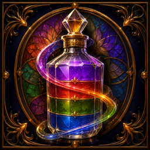

<meta charset="utf-8" />
<meta name="viewport" content="width=device-width, initial-scale=1" />
<title>Sortcraft — Vitray Atölyesi / Glass Sort Puzzle</title>
<meta name="description" content="Sortcraft — a colour-sorting puzzle set in a stained glass workshop. 100 levels, a new board every day, offline." />
<link rel="icon" href="assets/icon-256.png" />
<link rel="stylesheet" href="style.css" />

<main>
<div class="top">
  <nav>
    <a href="index.html" aria-current="page" data-tr="Tanıtım" data-en="Overview">Tanıtım</a>
    <a href="support.html" data-tr="Destek" data-en="Support">Destek</a>
    <a href="privacy.html" data-tr="Gizlilik" data-en="Privacy">Gizlilik</a>
  </nav>
  <div class="switch">
    <button id="b-tr" class="on">Türkçe</button>
    <button id="b-en">English</button>
  </div>
</div>

<!-- ================================ TÜRKÇE ================================ -->
<section id="tr">
  <div class="hero">
    
    <div>
      <h1>Sortcraft</h1>
      <p class="tag">Bir vitray atölyesinde renk ayırma bulmacası.</p>
      <div class="badges">
        <span class="badge">iOS &amp; Android</span>
        <span class="badge">İnternetsiz oynanır</span>
        <span class="badge">Ücretsiz</span>
      </div>
    </div>
  </div>

  <h2>Oyun</h2>
  <p>Renkli sıvıları şişeden şişeye dökersin. Bir şişenin tek renge inmesi bir camın
  tamamlanmasıdır. Zamana karşı yarış yok, can yok, kaybetme ekranı yok — tıkandığında
  geri alır ya da baştan başlarsın.</p>

  <ul class="facts">
    <li><b>100</b>seviye · Normal, Zor, Usta</li>
    <li><b>Her gün</b>yeni bir tahta</li>
    <li><b>4</b>güçlendirici</li>
  </ul>

  <h2>İçinde ne var</h2>
  <div class="grid">
    <div class="cell"><h3>Günün Bulmacası</h3><p>Her gün o güne özel tek bir tahta.
    Takvim, o ay hangi günleri çözdüğünü gösterir.</p></div>
    <div class="cell"><h3>Simya Kazanı</h3><p>Seviyelerden toplanan Ay Tozu, Kristal
    Yaprak ve Ateş Özü tariflere dönüşür.</p></div>
    <div class="cell"><h3>Güçlendiriciler</h3><p>Geri Al, İpucu, Ek Şişe ve Prizma.
    Hiçbiri zorunlu değil; seviyeyi her zaman baştan oynayabilirsin.</p></div>
    <div class="cell"><h3>Çevrimdışı</h3><p>Yüz seviyenin tamamı uygulamanın içinde.
    İnternet yalnızca reklam yüklemek için gerekir.</p></div>
  </div>

  <h2>Dürüst olmak gerekirse</h2>
  <p>Sortcraft'ta <strong>reklam var</strong>: istersen izlediğin ödüllü videolar, ve
  seviye bitişlerinde seyrek çıkan geçiş reklamları — 6. seviyeden önce ve ilk oturumda
  hiç yok. <strong>Uygulama içi satın alma yok, hesap yok, bulut kaydı yok.</strong>
  İlerlemen yalnızca cihazında durur. Ayrıntılar
  <a href="support.html">destek</a> ve <a href="privacy.html">gizlilik</a> sayfalarında.</p>

  <div class="links">
    <a href="support.html">Destek</a>
    <a href="privacy.html">Gizlilik Politikası</a>
    <a href="mailto:smskery@gmail.com">smskery@gmail.com</a>
  </div>

  <footer>Eray Şimşek · Sortcraft · <a href="../index.html">Tüm uygulamalar</a></footer>
</section>

<!-- ================================ ENGLISH ================================ -->
<section id="en" hidden>
  <div class="hero">
    
    <div>
      <h1>Sortcraft</h1>
      <p class="tag">A colour-sorting puzzle set in a stained glass workshop.</p>
      <div class="badges">
        <span class="badge">iOS &amp; Android</span>
        <span class="badge">Works offline</span>
        <span class="badge">Free</span>
      </div>
    </div>
  </div>

  <h2>The game</h2>
  <p>You pour coloured liquids from vessel to vessel. A vessel down to a single colour is
  a pane finished. No timer, no lives, no losing screen — when you get stuck you undo, or
  start the board again.</p>

  <ul class="facts">
    <li><b>100</b>levels · Normal, Hard, Master</li>
    <li><b>Daily</b>a new board</li>
    <li><b>4</b>boosters</li>
  </ul>

  <h2>What is inside</h2>
  <div class="grid">
    <div class="cell"><h3>Today's Puzzle</h3><p>One board a day, specific to that date.
    The calendar shows which days of the month you have solved.</p></div>
    <div class="cell"><h3>Alchemy Cauldron</h3><p>Moon Dust, Crystal Leaf and Fire
    Essence collected from levels turn into recipes.</p></div>
    <div class="cell"><h3>Boosters</h3><p>Undo, Hint, Extra Vessel and Prism. None of
    them are required; you can always replay the level.</p></div>
    <div class="cell"><h3>Offline</h3><p>All one hundred levels ship inside the app. A
    connection is only needed to load an ad.</p></div>
  </div>

  <h2>To be straight with you</h2>
  <p>Sortcraft <strong>has ads</strong>: rewarded videos you choose to watch, and
  occasional interstitials after a level ends — none before level 6 and none in your first
  session. <strong>No in-app purchases, no accounts, no cloud save.</strong> Your progress
  lives on your device only. Details on the <a href="support.html">support</a> and
  <a href="privacy.html">privacy</a> pages.</p>

  <div class="links">
    <a href="support.html">Support</a>
    <a href="privacy.html">Privacy Policy</a>
    <a href="mailto:smskery@gmail.com">smskery@gmail.com</a>
  </div>

  <footer>Eray Şimşek · Sortcraft · <a href="../index.html">All apps</a></footer>
</section>
</main>

<script>
  var secs = { tr: document.getElementById('tr'), en: document.getElementById('en') };
  var btns = { tr: document.getElementById('b-tr'), en: document.getElementById('b-en') };
  function pick(lang) {
    for (var k in secs) {
      secs[k].hidden = k !== lang;
      btns[k].classList.toggle('on', k === lang);
    }
    var nl = document.querySelectorAll('nav a[data-' + lang + ']');
    for (var i = 0; i < nl.length; i++) nl[i].textContent = nl[i].getAttribute('data-' + lang);
    document.documentElement.lang = lang;
    try { history.replaceState(null, '', '#' + lang); } catch (e) {}
  }
  btns.tr.onclick = function () { pick('tr'); };
  btns.en.onclick = function () { pick('en'); };
  var initial = (location.hash || '').replace('#', '');
  if (initial !== 'tr' && initial !== 'en') {
    initial = (navigator.language || 'en').toLowerCase().indexOf('tr') === 0 ? 'tr' : 'en';
  }
  pick(initial);
</script>
